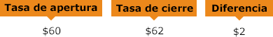
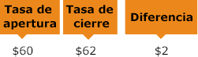

<!DOCTYPE html>
<html lang="en">
   <head>
      <meta charset="utf-8" />
      <META NAME="ROBOTS" CONTENT="NOINDEX, NOFOLLOW">
      <meta name="viewport" content="width=device-width, initial-scale=1">
      <link rel="stylesheet" type="text/css" href="../eng/Web/notifications.css"/>
   </head>
   <body>
      <div class="PopupWrapper">
         <div class="content">
            <div class="depHeader">
               <p id="MainTitle">
                  <span id="MainTitleThinner">Encuentre un ejemplo</span>
                  <br>
              de trading rápido
               </p>
               
            </div>
            <div class="dep">
               <p id="text1">
           Las plataformas de trading de iFOREX le permiten negociar fácilmente monedas, materias primas, índices, acciones, ETF y criptodivisas en forma de CFD. ¿Cómo se abre una posición?
               </p>
               <p id="FirstTitle">
           Acuerdos de compra y venta
               </p>
               <p id="text1">
            Cuando negocia CFD con iFOREX, puede aprovechar cualquier cambio en cualquier variación de precio de un instrumento específico, independientemente de si cree que aumentará o disminuirá. ¿Cree que el precio de un producto caerá? Abra un acuerdo de 'Venta'. ¿Cree que va a subir? Abra una posición de 'Compra'.
               </p>
               <p id="FirstTitle">
          Un ejemplo de inversión
               </p>
               <p id="text2">
         Esta es la manera de abrir un acuerdo con iFOREX en cuatro rápidos pasos:
               </p>
               <ol class="NumList">
                  <li>
                     Elija un instrumento CFD  <span class="ListText" > (un par de divisas, materias primas, acciones, criptodivisas, etc.). En este ejemplo, vamos con el Petróleo Crudo WTI. Supongamos que un solo CFD cuesta 60 US$.</span>
                     </span>
                  </li>
                  <li>
                     Escoja el tamaño de su operación<br>
                     <span class="ListText" >
                     El apalancamiento máximo en el petróleo es de 200:1. Entonces, con una inversión de 200 US$, puede abrir una transacción de hasta 40.000 US$. ¿Cómo es posible? Bien:
                     <br>
                     <span class="ListTextOrenge">200 US$ x 200 = 40.000 US$</span>
                     <br>
                    ¿Cuántos contratos de 60 US$ podemos comprar con 40.000 US$?
                     <br>
                     Redondeémoslo a <span class="ListTextOrenge">650</span>.
                     </span>
                  </li>
                  <li>
                Elija una dirección
                     <br>
                     <span class="ListText" >¿Recuerda las ofertas de 'Compra' y 'Venta'? En este caso, escogeremos una posición de 'Compra', lo que significa que creemos que el precio del petróleo va a subir.</span>
                  </li>
                  <li>
                Cierre su posición
                     <br>
                     <span class="ListText" >Supongamos que el precio del petróleo aumentó en 2 US$. Decide, pues, cerrar el acuerdo. ¿Cuál es su beneficio?</span>
                  </li>
               </ol>
               	
               	
               <ol class="NumList NoneNumList">
                  <li>
                     <p class="BoxText">
					 <span class="ListText" >
                      Si su respuesta es 2 US$, eso no es del todo correcto, porque, como recordará, compramos 650 contratos. Entonces, su beneficio verdadero es en realidad:
                       </span> 
						<br>
                      2 US$ (ganancia) x 650 (contratos) = 1.300 US$.
                     </p>
                  </li>
                  <li>
                     <p class="ListTextSection" >
               Como puede ver, abrir un acuerdo en la plataforma de trading iFOREX es bastante fácil. ¿Listo para continuar? Vamos allá.
                     </p>
                  </li>
               </ol>
            </div>
         </div>
      </div>
   </body>
</html>